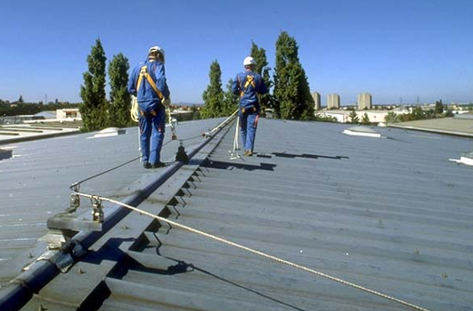
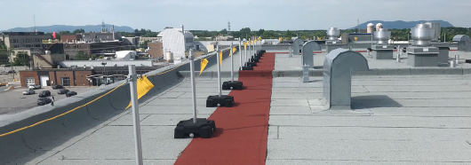
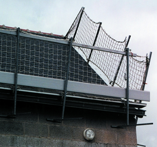
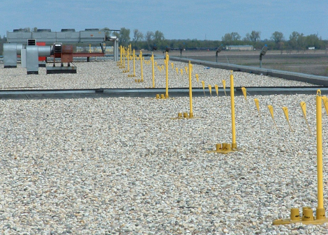
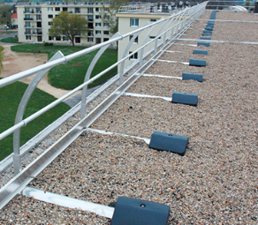
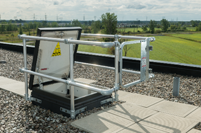

Roof Access Fundamental
Purpose
The roof access program establishes minimum Space (Owens Illinois) EHS (environmental, health, and safety) expectations for accessing and working on roofs.
This procedure applies to all Space facilities, to all Space personnel, and to all contractors working at Space sites.
Definitions
- Cherry Picker
- a hydraulic crane with a railing-enclosed platform or basket located at the end of the boom, which is used for raising and lowering people.
- Fall Prevention
- Any means used to prevent or eliminate a worker fall from heights. Fall prevention can be provided using guardrail systems and safety net systems.
- Fall Protection
- a system an employer uses to provide protection should someone fall.
- Flat Roof
- roofs with a maximum slope of 15%.
- Fragile Roof
- a roof which can collapse if a reasonable weight is placed on it.
- Low-Slope Roof
- a roof having a slope less than or equal to four inches of vertical rise for every 12 inches of horizontal length (4:12).
- Personal Fall Arrest System
- a system (including all components) used to provide protection from falling or to safely arrest an employee's fall if one occurs. Examples of personal fall protection systems include personal fall arrest systems, positioning systems, and travel restraint systems.
- Scaffolding
- temporary metal or wooden frameworks used to support people and materials during the erection or repair of buildings or other constructions.
Document Classification
- Asset Protection and Stability
- Organization and Training
- Cost
- Quality
- Efficiency and Throughput
- Safety and Environment
Fundamentals
- N/A
|
|
Eliminate the risk Elimination of the exposure to risk is the best solution. |
|
 |
Passive fall prevention Install a physical barrier, like a railing, around the edges and unprotected holes, using either permanent protection or temporary protection for the duration of the roof work. |
|
 |
Movement limitation, fall restraint Prevent workers from gaining access to the drop zone through the use of personal protective equipment. |
 |
 |
Fall arrest system When exposure to risk is unavoidable, consider an anchoring system, a connection, a body support device, and a rescue procedure. |
|
 |
Administrative control Establish practices or procedures to educate employees about risks. Implement warning lines. This is the least recommended solution. |
 |
Application
- First, perform a risk assessment and analyze all low-risk alternatives to accomplish the work, such as:
- Carry out the work on the ground whenever possible.
- Use a cherry picker (if feasible) to avoid actually being on the roof.
- Erect scaffolding wherever appropriate.
- If working on a roof is necessary:
- Establish entrance and exit points.
- Identify the type of roof (pitched, flat, or fragile).
- Assess the structural integrity of the roof, including cladding and beams.
- Determine the weight distribution on the roof.
- Assess the presence of existing fall prevention and protection measures.
- Determine any need for fall prevention and any additional protection.
- Consider asbestos exposure.
- Thoroughly analyze other factors that may endanger the safety of employees.
- Provide staff training.
- Develop and exercise an emergency plan.
- Follow all site-specific ladder safety procedures when accessing the roof from a portable or fixed ladder.
- Following the risk assessment, develop a work at height permit and identify the fall prevention measures installed or those required temporarily. If fall prevention is not feasible, determine an appropriate fall protection system.
- Any fall protection system must follow Space’s Working at Heights program.
- Contractors must complete a Site Safety Plan following the guidance and approval process listed in the Contractor Safety Fundamental before beginning any roof projects.
- If required, consider other work permits such as hot-work permits. LOTO (lock out/tag out) procedures may be required for some projects.
- Obtain validation from Space of the required protection to be implemented, which is dependent on the roof type.
Procedure
- When working on sloping roofs:
- Eaves safety includes:
- Permanent fences and ramps.
- Safety nets, scaffolding, or platforms.
- Personal protection equipment (against falls). 
- Sloping roof safety requires:
- Protection of openings and fragile areas.
- Roof ladders for moving on sloping roofs (not directly on the tiles).
- Inspect around the steps (where the work will be performed).

- Eaves safety includes:
- When working on flat roofs:
- For work that will take place at distances greater than four meters (or 13 feet) from the eaves:
- Mark a four-meter (13-foot) distance on the roof (using paint, chalk, tape, or something similar). No other protection is required in the marked area.
- If using mechanical equipment, mark a 3.5-meter (ten-foot) distance from
the edge of the roof. 
- For work that will take place at distances greater than four meters (or 13 feet) from the eaves:
- For work that will take place at distances of less than four meters (13 feet) of eaves, requirement include:
- A permanent fence and ramps.
- Safety nets, scaffolding, or a platform.
- Personal protection equipment against falls. 
- In all cases, implement protection of openings and fragile areas.


- Working on fragile and difficult roofs, which includes rigid roofs, small roofs (less than several square meters), corrugated iron roofs of warehouses, old roofs, feeders (plastic), roofs of overhead tanks, and similar areas:
- Revisit the first step: the risk assessment. Analyze all the potential solutions for performing the work:
- Carry out work on the ground whenever possible.
- Use a cherry picker or a personnel lift (if feasible) to avoid or minimize physical work on the roof.
- Erect scaffolding, if appropriate.
- When access to the roof is necessary:
- Partition any fragile areas of the roof, establish peripheral protection in fragile areas, and complete protection of the edge of the roof if the roof is entirely fragile.
- Prevent unauthorized access by blocking access to roof ladders and by posting signage.
- Use work platforms with top and middle handrails and peripheral protection
sufficiently large enough to be supported by non-fragile areas of the
roof.


- If working platforms are not possible:
- Hang safety nets under the roof.
- Employ personal fall protection.
- Revisit the first step: the risk assessment. Analyze all the potential solutions for performing the work:
Training
Anyone working at heights or writing permits to work at heights must have received specific training.
Material for Roofing and Waste Work
- Order and cleanliness are a priority when working on roofs.
- Pay special attention to the installation of equipment on fragile roofs.
- Use garbage dumpsters or containers to bring the waste down from the roof.
- Do not leave equipment on the roof at the completion of work. Attention must be paid to weekends and public holidays.
- If equipment and materials are left on-site, confirm that they are well secured to prevent them from being torn from the roof by high winds.
Evacuation and Emergency Plan
- Develop an emergency plan which has varying scenarios for accidents on the roof.
- Confirm that there are adequate escape routes on the roof, if necessary, by supplying any needed additional scaffolding or stair towers.
What is Forbidden in the Event of Roof Work
- Never throw or drop material from a roof. Always use chutes or containers to lower them.
- No work is permitted on roofs in the event of snow, wind, rain, lightning or storms. Should lightning be detected within a 10-mile radius, work will not resume for 30 minutes past the last lightning strike.
- Never go outside of the protected area.
- Do not walk on a fragile roof.
- Never stand on or lean through a guardrail system.
Approval
|
Role |
Representative |
|---|---|
|
Roundtable – Health Leader |
Richard Simmons |
|
Roundtable – Safety Leader |
Ken Smigielski |
|
Roundtable – Environmental |
Rod Miller |
|
Safety, Security, and Loss Prevention |
Rick Trotta |
|
VP Global EHS |
Dan Helman |
Revision History
| 2020-04-16 |
Approved by Dan Helman, VP Global EHS Original Issue |